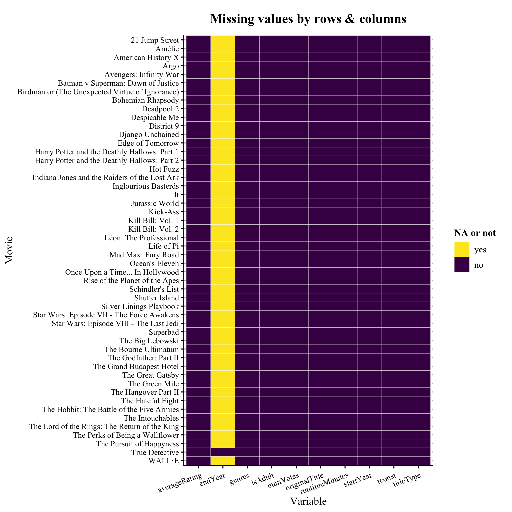
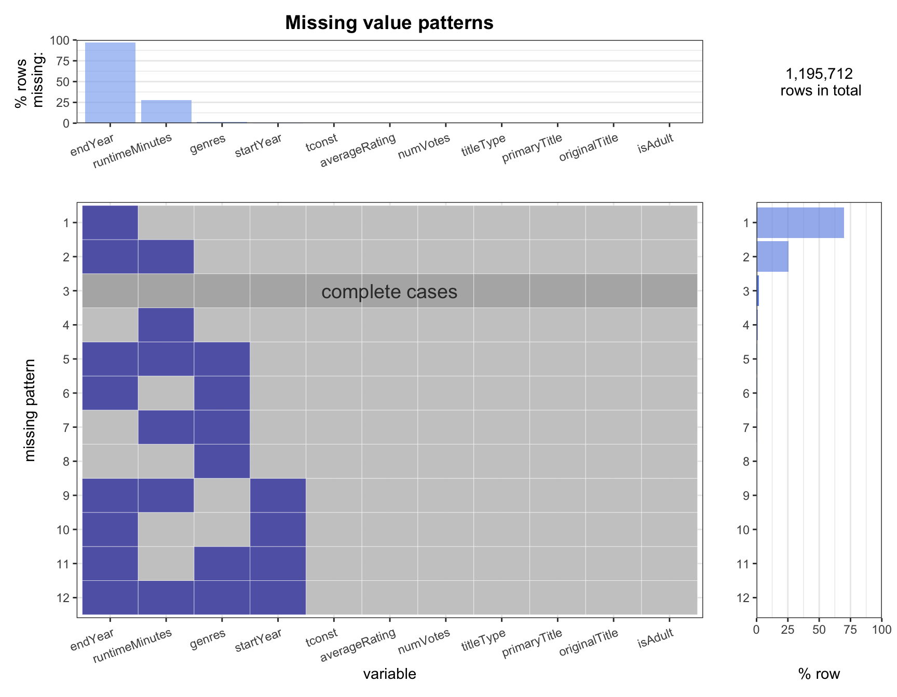
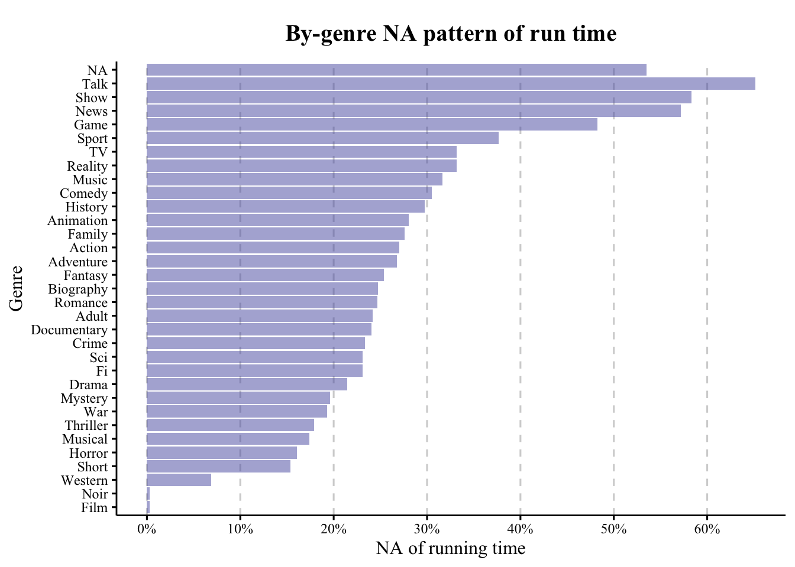

Chapter 4 Missing values
4.1 Missing glance
We first take a glance of the missingness.
By columns:
## endYear runtimeMinutes genres startYear tconst ## 1160866 328255 19801 197 0 ## averageRating numVotes titleType primaryTitle originalTitle ## 0 0 0 0 0 ## isAdult ## 07 columns are complete.
endYearandruntimeMinutesseem to be a severely missing columns.
## The Lord of the Rings: The Return of the King ## 1 ## Django Unchained ## 1 ## Inglourious Basterds ## 1 ## Schindler's List ## 1 ## The Green Mile ## 1 ## Shutter Island ## 1 ## The Godfather: Part II ## 1 ## Léon: The Professional ## 1 ## American History X ## 1 ## Kill Bill: Vol. 1 ## 1 ## WALL·E ## 1 ## Avengers: Infinity War ## 1 ## Mad Max: Fury Road ## 1 ## Indiana Jones and the Raiders of the Lost Ark ## 1 ## Star Wars: Episode VII - The Force Awakens ## 1 ## Harry Potter and the Deathly Hallows: Part 2 ## 1 ## The Intouchables ## 1 ## The Big Lebowski ## 1 ## The Grand Budapest Hotel ## 1 ## Amélie ## 1 ## Kill Bill: Vol. 2 ## 1 ## Silver Linings Playbook ## 1 ## Batman v Superman: Dawn of Justice ## 1 ## District 9 ## 1 ## Once Upon a Time... In Hollywood ## 1 ## Edge of Tomorrow ## 1 ## The Bourne Ultimatum ## 1 ## Jurassic World ## 1 ## Birdman or (The Unexpected Virtue of Ignorance) ## 1 ## Life of Pi ## 1 ## Argo ## 1 ## Star Wars: Episode VIII - The Last Jedi ## 1 ## The Hateful Eight ## 1 ## Superbad ## 1 ## Ocean's Eleven ## 1 ## Kick-Ass ## 1 ## 21 Jump Street ## 1 ## Deadpool 2 ## 1 ## Despicable Me ## 1 ## Rise of the Planet of the Apes ## 1 ## The Great Gatsby ## 1 ## Harry Potter and the Deathly Hallows: Part 1 ## 1 ## It ## 1 ## The Hobbit: The Battle of the Five Armies ## 1 ## Bohemian Rhapsody ## 1 ## Hot Fuzz ## 1 ## The Perks of Being a Wallflower ## 1 ## The Hangover Part II ## 1 ## The Pursuit of Happyness ## 1 ## True Detective ## 0By rows & columns: we pick the 50 most popularly voted pieces of work, and check their missingness among all colomns:

Utmost 1 column is missing in these rows, which indicates that IMDB, who makes the data of popular videos available to public, has done a good job collecting them!
NA in
endYearis especially frequent.- One possible explanation is that only TV series have
endYearas an attribute. And we can see from the plot that Top voted videos are more likely to be movies than TV series.
- One possible explanation is that only TV series have
4.2 Missing plot
4.2.1 Missing pattern summary
Then we draw the missing value plot we coded from the Problem Set 4.

The most prevalent missing pattern is indeed the missing endYear, accounting for about 70% of the cases, which is driven by the fact that the endYear variable is missing in nearly all of the samples. In addition, runtimeMinutes and endYear are frequently absent simultaneously, whereas genres and startYear are missing in minor amounts.
4.2.2 Heatmap

- We generated a heatmap based on the 50 most-voted works. All of the missings are for endYear with True Detective as an exception because only TV series has an endYear.
- Compared with other popular films, True Detective has fewer number of votes, but a relatively high
averageRatingandruntimeMinutes. Long running time matches the nature of TV series.
4.3 Insight about why NA happens
4.3.1 Missing by Years
We first take a look at the missing values of runtime and genres by each of their launching year.
Since the number of new movies vary a lot by years, we take a look into the missing ratios rather than values.

From the first figure, we can see that the number of works is increasing by years (except for 2020 because of COVID-19). From the following 2 graphs, we can see that the amount of missing data for
runtimeMinutesandgenresare quite volatile.For
runtimeMinutes, the missing percentage was high before 1960 may be due to technology reasons (but the sample size is small), and there is an increasing trend after 1960.For
genres, it begins to decrease after the year of 2000. We can infer that the film market became more standardized and the industry has been benefited by the growth of technology.
4.3.2 Missing by Genres
Let take a deeper look at the missing values of runtime by each of their genre to see if there are some patterns here:

We can see a significant difference between
genres:Genres which are not usaully limited by run time, such as talk show and news, have the most missing runtimes as expected.
On the contrary, films and noir nearly have no missing value in runtime, which are also as what we might be expecting.